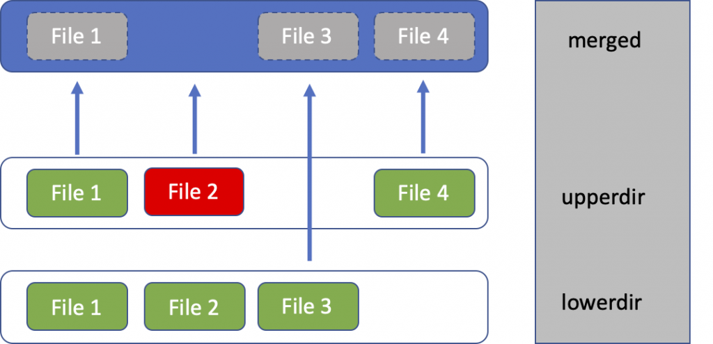

Containers Are Just Linux process (or process tree).
It is a combination of Linux primitives. I would call these the 3 common Linux primitives used by containers:
- Namespaces for isolation
- Cgroups for resource control
- A layered root filesystem for the container's file view, often implemented with OverlayFS (for a simple reflection)
This article uses Podman for the demos, because Podman is close enough to Docker to feel familiar, but transparent enough that we can still see the Linux primitives.
0. What is OCI?
It has 2 parts: OCI and OCI Runtime
OCI
From what I understand, Open Container Initiative (OCI) is a standard for container. With this standard, an image built with Docker can be run pretty well in Podman or Kubernetes and vice versa.
Content copy from homepage of OCI:
The OCI currently contains three specifications: the Runtime Specification (runtime-spec), the Image Specification (image-spec) and the Distribution Specification (distribution-spec). The Runtime Specification outlines how to run a “filesystem bundle” that is unpacked on disk. At a high-level an OCI implementation would download an OCI Image then unpack that image into an OCI Runtime filesystem bundle. At this point the OCI Runtime Bundle would be run by an OCI Runtime.
OCI Runtime
The OCI Runtime is the implementation that communicates with the kernel to expand the image into a container xD
1. What exactly is Podman?
If you are coming from Docker, you can think of Podman as:
- A daemonless container engine
- It speaks a Docker-like CLI
- It uses an OCI runtime like crun or runc underneath
- No need service running in background.
The word daemonless is important!.
Let's me show you a quick example but not really related to container, but it's about daemonless vs daemon xD
Gitlab CI with Docker:
build_docker:
image: docker:latest
services:
- docker:dind # Required for Docker daemon
script:
- docker build -t image-name .
Gitlab CI with Podman:
build_podman:
image: quay.io/podman/stable:latest
script:
- podman build -t image-name .
2. The 3 Common Linux Primitives Behind Containers
Primitive 1: Namespaces
Isolation is what I understand about namespaces in Linux. It gives a process its own view of specific system resources.
Common namespace types you will meet in containers, detail in Redhat blog
- PID namespace: the process gets its own process tree
- NET namespace: its own network stack, interfaces, routes, ports
- MNT namespace: its own mount table
- UTS namespace: its own hostname
- IPC namespace: its own shared memory / semaphores
- USER namespace: user and group ID remapping, especially important for rootless containers
There are also cgroup and time namespaces, but the ones above are the types you will encounter most often in container discussions.
This is why process 12345 on the host can look like PID 1 inside the container. It is the same underlying kernel, but the process is looking through a different namespace view.
Primitive 2: Cgroups
While namespaces isolate what a process can see. Cgroups control how much of the machine a process can consume.
That includes things like:
- CPU time
- Memory
- Number of processes
- I/O accounting and limits
Without cgroups, a "container" could still exist as an isolated process, but it would be terrible for multi-tenant systems because one noisy workload could fucked up everything else. That is why resource limit is the fucking important!
Primitive 3: A Layered Root Filesystem
Every container needs a filesystem view:
/bin/sh/etc/usr- and so on...
That is the job of the container root filesystem.
In modern Linux container engines, this filesystem is often built from image layers plus a writable container layer. A very common implementation is OverlayFS.
That gives us the classic model:
lower layers (image) + upper layer (container writes) -> merged view
3. Lab Setup
To follow this lab on Ubuntu 24.04, install:
- Podman
- jq
- util-linux for
nsenterand related tools - iproute2 for
ip addr
sudo apt update
sudo apt install -y podman jq util-linux iproute2
Quick checks:
podman version
podman info --format 'OCI_Runtime={{.Host.OCIRuntime.Name}} Cgroup_Manager={{.Host.CgroupManager}} Storage_Driver={{.Store.GraphDriverName}} Rootless={{.Host.Security.Rootless}}'
Expected output:
# Version
Client: Podman Engine
Version: 4.9.3
API Version: 4.9.3
Go Version: go1.22.2
Built: Thu Jan 1 08:00:00 1970
OS/Arch: linux/amd64
# Info
OCI_Runtime=runc
Cgroup_Manager=systemd
Storage_Driver=overlay
Rootless=false
For this article, I will use rootful Podman in the low-level inspection steps because it makes namespace and filesystem introspection simpler. Podman supports rootless mode too, but we will not talk about it in this article xD
4. Step 1: Run One Real Container
Let us create a tiny container with very visible limits, it will has fully explained in the next steps:
podman run -d --name kienlt-lab \
--hostname kienlt-lab \
--memory 128m \
--cpus 0.5 \
--pids-limit 64 \
docker.io/library/alpine:3.22 \
sleep infinity
Check it:
podman ps
# Output
CONTAINER ID IMAGE COMMAND CREATED STATUS PORTS NAMES
71d926d3c61c docker.io/library/alpine:3.22 sleep infinity 13 seconds ago Up 14 seconds kienlt-lab
podman inspect kienlt-lab --format '{{.State.Status}}'
# Output
running
Get the host PID of the container's main process:
PID=$(sudo podman inspect -f '{{.State.Pid}}' kienlt-lab)
echo "$PID"
# Example output:
# 890812
kienlt-lab is not a mini-VM. It is just a process (or process tree) on the host. Podman simply created it with a different set of namespaces, cgroups, and mounts. Here is the proof
# Inside the container
root@kienlt-lab-utilities:~# podman exec kienlt-lab ps -ef
PID USER TIME COMMAND
1 root 0:00 sleep infinity
6 root 0:00 ps -ef
root@kienlt-lab-utilities:~# podman top kienlt-lab
USER PID PPID %CPU ELAPSED TTY TIME COMMAND
root 1 0 0.000 6m12.258388147s ? 0s sleep infinity
# On the host
root@kienlt-lab-utilities:~# ps -ef|grep sleep
root 890812 890800 0 00:50 ? 00:00:00 sleep infinity
# Or even better grep
root@kienlt-lab-utilities:~# ps -fp $(pgrep -f "sleep infinity")
UID PID PPID C STIME TTY TIME CMD
root 890812 890800 0 00:50 ? 00:00:00 sleep infinity
Let's see detail of process 890812
root@kienlt-lab-utilities:~# pstree -aps 890812
systemd,1 --system --deserialize=81
└─conmon,890800 --api-version 1 -c 71d926d3c61c8c4a9beecc7d1a81a516d247dcf1c541bb71e9a39fb89721b7d5 -u 71d926d3c61c8c4a9beecc7d1a81a516d247dcf1c541bb71e9a39fb89721b7d5 -r /usr/bin/runc -b...
└─sleep,890812 infinity
Yes, /usr/bin/runc... the OCI runtime
5. Step 2: Prove the Namespace Story
List the namespaces associated with that process:
lsns -p "$PID"
You will typically see namespace with types like time,user,net....
root@kienlt-lab-utilities:~# lsns -p "$PID"
NS TYPE NPROCS PID USER COMMAND
4026531834 time 226 1 root /usr/lib/systemd/systemd --system --deserialize=81
4026531837 user 225 1 root /usr/lib/systemd/systemd --system --deserialize=81
4026533601 net 1 890812 root sleep infinity
4026533660 mnt 1 890812 root sleep infinity
4026533661 uts 1 890812 root sleep infinity
4026533662 ipc 1 890812 root sleep infinity
4026533663 pid 1 890812 root sleep infinity
4026533664 cgroup 1 890812 root sleep infinity
Enter the container's namespaces from the host:
nsenter -t "$PID" -m -u -i -n -p sh
# Or shorter way to enter namespace with PID...
nsenter -t "$PID" -a sh
Now run these commands inside that namespace view:
hostname
ip addr
ps -ef
mount | head
Expected output:
root@kienlt-lab-utilities:~# nsenter -t "$PID" -m -u -i -n -p sh
/ # ps -ef
PID USER TIME COMMAND
1 root 0:00 sleep infinity # This is the main process of container
11 root 0:00 sh # This is the shell I'm using
12 root 0:00 ps -ef # And this is the command I'm running
/ # hostname
kienlt-lab
/ # ip addr
1: lo: <LOOPBACK,UP,LOWER_UP> mtu 65536 qdisc noqueue state UNKNOWN qlen 1000
link/loopback 00:00:00:00:00:00 brd 00:00:00:00:00:00
inet 127.0.0.1/8 scope host lo
valid_lft forever preferred_lft forever
inet6 ::1/128 scope host
valid_lft forever preferred_lft forever
2: eth0@if38: <BROADCAST,MULTICAST,UP,LOWER_UP,M-DOWN> mtu 1500 qdisc noqueue state UP qlen 1000
link/ether 92:62:ee:30:ce:4d brd ff:ff:ff:ff:ff:ff
inet 10.88.0.2/16 brd 10.88.255.255 scope global eth0
valid_lft forever preferred_lft forever
inet6 fe80::9062:eeff:fe30:ce4d/64 scope link
valid_lft forever preferred_lft forever
/ # mount|head
overlay on / type overlay (rw,relatime,lowerdir=/var/lib/containers/storage/overlay/l/OZSBEMCB4NRVVXNZV5W5NJS2HM,upperdir=/var/lib/containers/storage/overlay/10fd7e8145ead961bd9f42c8402410974548da353e02474a93e5428d30962c5f/diff,workdir=/var/lib/containers/storage/overlay/10fd7e8145ead961bd9f42c8402410974548da353e02474a93e5428d30962c5f/work,uuid=on,nouserxattr)
proc on /proc type proc (rw,nosuid,nodev,noexec,relatime)
tmpfs on /dev type tmpfs (rw,nosuid,size=65536k,mode=755,inode64)
sysfs on /sys type sysfs (ro,nosuid,nodev,noexec,relatime)
devpts on /dev/pts type devpts (rw,nosuid,noexec,relatime,gid=5,mode=620,ptmxmode=666)
mqueue on /dev/mqueue type mqueue (rw,nosuid,nodev,noexec,relatime)
tmpfs on /run/.containerenv type tmpfs (rw,nosuid,nodev,noexec,relatime,size=813152k,mode=755,inode64)
tmpfs on /etc/hostname type tmpfs (rw,nosuid,nodev,noexec,relatime,size=813152k,mode=755,inode64)
tmpfs on /etc/resolv.conf type tmpfs (rw,nosuid,nodev,noexec,relatime,size=813152k,mode=755,inode64)
tmpfs on /etc/hosts type tmpfs (rw,nosuid,nodev,noexec,relatime,size=813152k,mode=755,inode64)
# xD
root@kienlt-lab-utilities:~# ifconfig podman0
podman0: flags=4163<UP,BROADCAST,RUNNING,MULTICAST> mtu 1500
inet 10.88.0.1 netmask 255.255.0.0 broadcast 10.88.255.255
inet6 fe80::50ff:afff:fea1:ed7c prefixlen 64 scopeid 0x20<link>
What you should notice:
hostnameiskienlt-lab, not the host hostname- the process list is tiny compared with the host
- the network interfaces and routes are container-specific
- the mount table is not the same as the host mount table
That is namespaces which is able to explain in one line: The process is still on the same kernel, but it sees a different world.
6. Step 3: Prove the Cgroup Story
We started the container with:
--memory 128m--cpus 0.5--pids-limit 64
Now let us see where those limits live.
First, inspect the cgroup path:
cat /proc/$PID/cgroup
Expected output:
0::/machine.slice/libpod-71d926d3c61c8c4a9beecc7d1a81a516d247dcf1c541bb71e9a39fb89721b7d5.scope
Capture it:
CGROUP_REL=$(awk -F: '$1=="0"{print $3}' /proc/$PID/cgroup)
CGROUP_DIR="/sys/fs/cgroup${CGROUP_REL}"
echo "$CGROUP_DIR"
Now inspect the actual cgroup files:
cat "$CGROUP_DIR/memory.max"
cat "$CGROUP_DIR/cpu.max"
cat "$CGROUP_DIR/pids.max"
You should see values that correspond to the limits we gave Podman.
For example:
# Not related but you will understand where is the fucking CGROUP_REL comes from!
root@kienlt-lab-utilities:~# cat /proc/890812/cgroup
0::/machine.slice/libpod-71d926d3c61c8c4a9beecc7d1a81a516d247dcf1c541bb71e9a39fb89721b7d5.scope
# And then
root@kienlt-lab-utilities:~# cat "$CGROUP_DIR/memory.max"
134217728
# Lets calculate xD
root@kienlt-lab-utilities:~# bytes=134217728
root@kienlt-lab-utilities:~# mib=$((bytes / 1024 / 1024))
root@kienlt-lab-utilities:~# echo "${mib} MB"
128 MB
root@kienlt-lab-utilities:~# cat "$CGROUP_DIR/cpu.max"
50000 100000
root@kienlt-lab-utilities:~# cat "$CGROUP_DIR/pids.max"
64
memory.maxshould be around134217728bytes for128mpids.maxshould be64cpu.maxshould show a quota/period pair that approximates0.5 CPU
Podman did not invent resource limits. It translated your CLI flags into cgroup settings the Linux kernel already understands.
You can also look at live usage (like command docker stats):
podman stats --no-stream kienlt-lab
ID NAME CPU % MEM USAGE / LIMIT MEM % NET IO BLOCK IO PIDS CPU TIME AVG CPU %
8c68368d643d kienlt-lab 0.01% 53.25kB / 134.2MB 0.04% 1.626kB / 936B 0B / 0B 1 34.723ms 0.01%
Again, the container is not that fucking special. It is just a process tree attached to a cgroup subtree.
7. Step 4: Prove the Layered Filesystem Story
This section is fucking great for me, I see overlayfs for a lot of fucking time, but I never really understand what the fuck are they!
Now let us inspect the container filesystem driver:
podman inspect kienlt-lab | jq '.[0].GraphDriver'
Expected output:
{
"Name": "overlay",
"Data": {
"LowerDir": "/var/lib/containers/storage/overlay/cce92674e98722970ab3fdce76a2566f54db535beeb24f0b4397f070ab5f6987/diff",
"MergedDir": "/var/lib/containers/storage/overlay/10fd7e8145ead961bd9f42c8402410974548da353e02474a93e5428d30962c5f/merged",
"UpperDir": "/var/lib/containers/storage/overlay/10fd7e8145ead961bd9f42c8402410974548da353e02474a93e5428d30962c5f/diff",
"WorkDir": "/var/lib/containers/storage/overlay/10fd7e8145ead961bd9f42c8402410974548da353e02474a93e5428d30962c5f/work"
}
}
cce9267.... and 10fd7e8145.... are SHA256 of uncompressed image layers?
That maps directly to OverlayFS concepts:
- LowerDir: read-only image layers
- UpperDir: writable layer for this container
- WorkDir: OverlayFS bookkeeping
- MergedDir: the final mounted root filesystem the process sees
Extract those paths:
LOWER_DIR=$(podman inspect kienlt-lab | jq -r '.[0].GraphDriver.Data.LowerDir')
UPPER_DIR=$(podman inspect kienlt-lab | jq -r '.[0].GraphDriver.Data.UpperDir')
MERGED_DIR=$(podman inspect kienlt-lab | jq -r '.[0].GraphDriver.Data.MergedDir')
echo "LOWER_DIR=$LOWER_DIR"
echo "UPPER_DIR=$UPPER_DIR"
echo "MERGED_DIR=$MERGED_DIR"
Now write a file from inside the container:
podman exec kienlt-lab sh -c 'echo "hello from upperdir" > /root/hello_overlayfs.txt'
Check the merged filesystem view:
ls -l "$MERGED_DIR/root/hello_overlayfs.txt"
cat "$MERGED_DIR/root/hello_overlayfs.txt"
Then inspect the upper layer:
ls -l "$UPPER_DIR/root/hello_overlayfs.txt"
cat "$UPPER_DIR/root/hello_overlayfs.txt"
Output in action:
root@kienlt-lab-utilities:~# ls -l "$MERGED_DIR/root/hello_overlayfs.txt"
-rw-r--r-- 1 root root 20 Mar 25 01:08 /var/lib/containers/storage/overlay/10fd7e8145ead961bd9f42c8402410974548da353e02474a93e5428d30962c5f/merged/root/hello_overlayfs.txt
root@kienlt-lab-utilities:~# cat "$MERGED_DIR/root/hello_overlayfs.txt"
hello from upperdir
root@kienlt-lab-utilities:~# ls -l "$UPPER_DIR/root/hello_overlayfs.txt"
-rw-r--r-- 1 root root 20 Mar 25 01:08 /var/lib/containers/storage/overlay/10fd7e8145ead961bd9f42c8402410974548da353e02474a93e5428d30962c5f/diff/root/hello_overlayfs.txt
root@kienlt-lab-utilities:~# cat "$UPPER_DIR/root/hello_overlayfs.txt"
hello from upperdir
# You can see clearly that the file is not in the lowerdir which is read-only. That is why echo to file in container doesn't show in lowerdir!
root@kienlt-lab-utilities:~# cat "$LOWER_DIR/root/hello_overlayfs.txt"
cat: /var/lib/containers/storage/overlay/cce92674e98722970ab3fdce76a2566f54db535beeb24f0b4397f070ab5f6987/diff/root/hello_overlayfs.txt: No such file or directory
root@kienlt-lab-utilities:~# ls -l "$LOWER_DIR/root/hello_overlayfs.txt"
ls: cannot access '/var/lib/containers/storage/overlay/cce92674e98722970ab3fdce76a2566f54db535beeb24f0b4397f070ab5f6987/diff/root/hello_overlayfs.txt': No such file or directory
That file was not baked into the image. It landed in the writable upper layer of this specific container.
A container image is not one giant mutable disk. It is usually a stack of read-only layers plus one writable layer on top.
A picture for easier imagination from blogs of cisco:

8. Put the 3 Pieces Together
The fucking flow:
Podman CLI
-> asks an OCI runtime to start a process
-> that process gets new namespaces
-> that process is attached to cgroups
-> that process sees a merged root filesystem
-> done
Reason containers are usually lighter than VMs:
- no second kernel
- no hardware virtualization boundary
- no emulated machine
- just a process with isolation, limits, and a filesystem view
9. Summary
If you want one sentence to remember, make it this: A container is just a Linux process built from namespaces, cgroups, and a container-specific root filesystem.
So yes, "namespaces + cgroups + OverlayFS" is a useful teaching shortcut or telling your friend xD
But the most precise version is:
- Namespaces provide isolation
- Cgroups provide resource control
- A layered root filesystem provides the file view
12. Cleanup
podman rm -f kienlt-lab
References:
- Containers are Linux
- Digging into the OCI Image Specification
- OverlayFS driver
- Container images
- Podman: What is Podman?
- Linux cgroup v2 documentation
- Linux OverlayFS documentation
- Linux namespaces overview
- Linux
nsenter